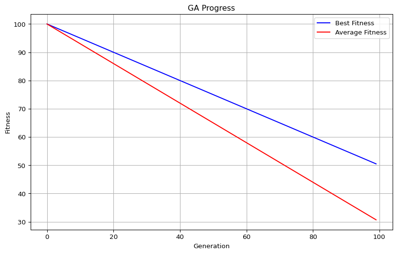
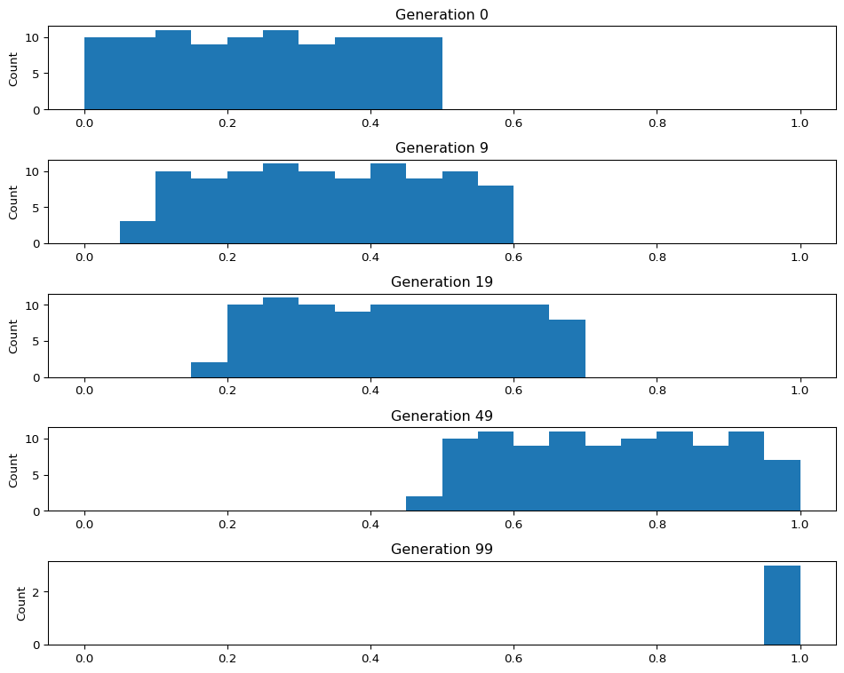

import matplotlib.pyplot as plt
# Generate mock history data
history = [
{
'generation': i,
'best_fitness': 100 - i * 0.5,
'avg_fitness': 100 - i * 0.7,
'population': [i / 100 + j * 0.005 for j in range(100)]
}
for i in range(100)
]
generations = [h['generation'] for h in history]
best_fitnesses = [h['best_fitness'] for h in history]
avg_fitnesses = [h['avg_fitness'] for h in history]
# Plot fitness progress
plt.figure(figsize=(10, 6))
plt.plot(generations, best_fitnesses, 'b-', label='Best Fitness')
plt.plot(generations, avg_fitnesses, 'r-', label='Average Fitness')
plt.xlabel('Generation')
plt.ylabel('Fitness')
plt.title('GA Progress')
plt.legend()
plt.grid(True)
plt.show()
# Plot population distribution at selected generations
plt.figure(figsize=(10, 8))
for i, gen in enumerate([0, 9, 19, 49, 99]):
plt.subplot(5, 1, i+1)
plt.hist(history[gen]['population'], bins=20, range=(0, 1))
plt.title(f"Generation {gen}")
plt.ylabel("Count")
plt.tight_layout()
plt.show()
